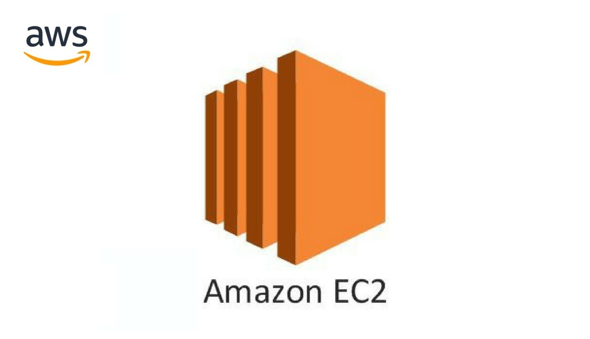
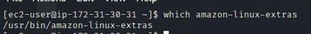
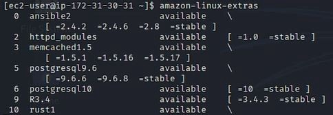
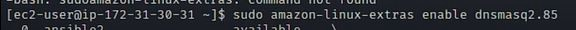
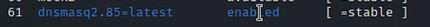
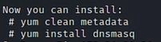

Install a software package from the Extras Library on an EC2 instance

To install a software package from the Extras Library, first confirm that the amazon-linux-extras repository is installed on your instance. Then, list the available software packages, enable the one you’re looking for, and then install the package using yum.
Steps:
- Connect to your EC2 Linux Instance using SSH.
- Confirm if the amazon-linux-extras package has been installed using the ‘which’ command.

If the amazon-linux-extras package has not been installed use the below command to install it :
$ sudo yum install -y amazon-linux-extras- List the available topics using the following command:
$ amazon-linux-extras
- Here I am installing Dnsmasq


- Enter the following commands, these will install dnsmasq.

Thanks for reading this post, if you like my work you can support by buying me a pizza. 🍕
Read other posts